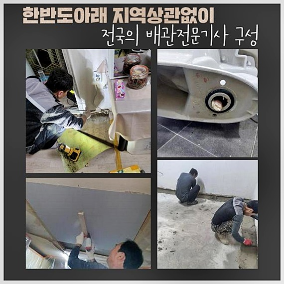
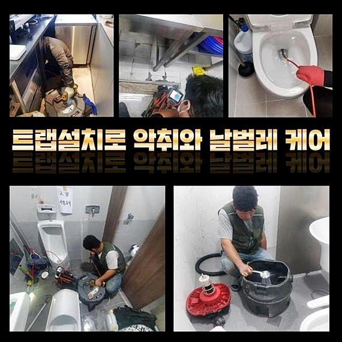
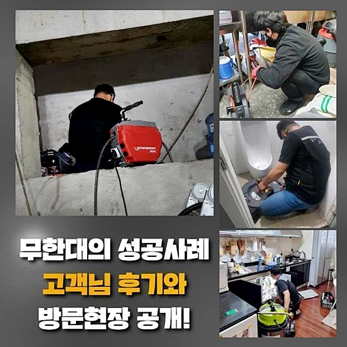
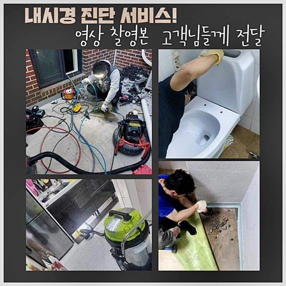
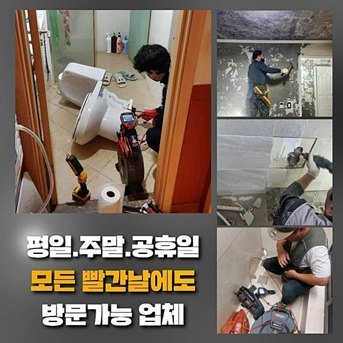
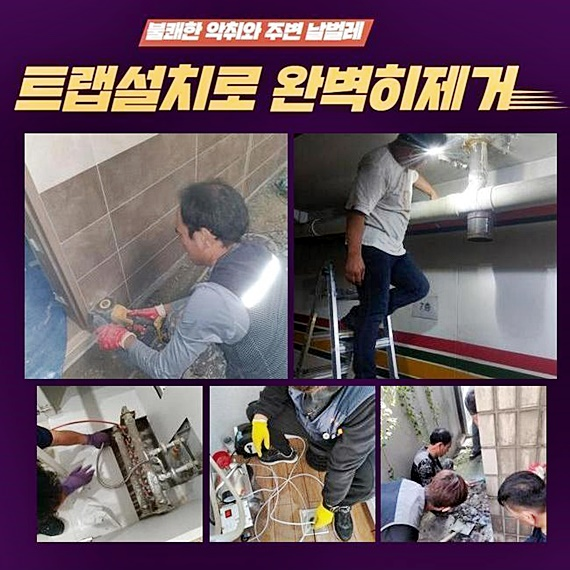
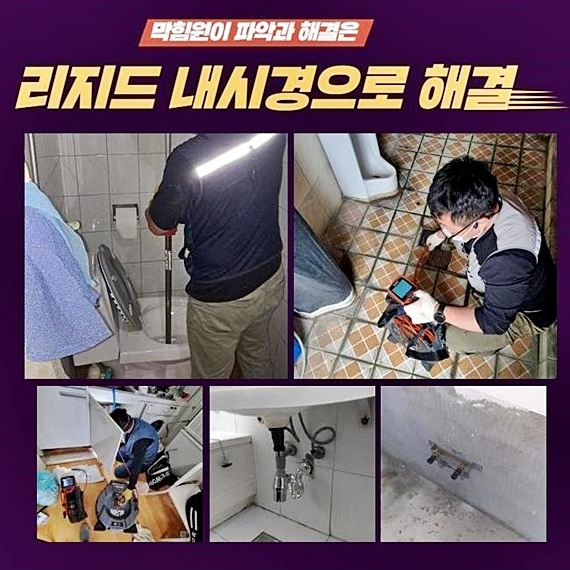

🏠 동대문 제기동싱크대배수관막힘 회기동 하수구청소장비 통수전문
용인시 처인구 배관막힘 전문 시공 후기

📋 작업 개요
- 위치: 용인시 처인구, 수원시 영통구, 화성시 동탄
- 서비스 유형: 배관막힘, 하수구청소, 고압세척, 내시경점검
- 작업 일시:
- 업체명: 하수구수사대 (010-5615-2118)
🔍 문제 상황
동대문 제기동싱크대배수관막힘 회기동 하수구청소장비 통수전문
보통 건물의 경우 이런저런 설비요소가 자리잡고 있죠 이것들 중에 큰 비중을 차지하는건 배수시설물이죠
물들을 쓰지 않는 건물이 없듯이 건물에는 배수를 책임지는 배관들이 적합하게 구성되어 있는것이 좋습니다
혹시라도 잔해물들이 배수관으로 빠지게되어 배수 길이 막힐 시엔 생활양식에서 당혹스러움을 느끼실텐데요
그러므로 배수장애가 수면 위로 떠오르면 바로 해결을 꾀해야합니다
반대로 밖에서 주시할 때 잔여물질이 어느정도로 자리하는건지 파악하기가 힘들어요
덧붙여 종류들도 짐작해내는게 쉽지않아요
전문기기의 이용이 안된 상태에선 전문성이 뛰어나도 완벽한 세척을 속행할 수가 없어요
이런 까닭에 보통 고객이면 큰 문제가 되겠죠?
그럼에도 불구하고 아직까지도 무분별하게 작업을 진행하려는 고객들도 여럿 있어요
youtube가 퍼지며 배관 장애의 조치들이 많아진 상태입니다
이로인하여 트래펑이라던지 크리너를 사용하는 방법을 어렵지 않게 볼 수 있어요
그렇지만 절대적으로 해당 방법들로 원상복구 되진 않죠
그도 그럴것이 배수관 안에 이유들을 살피지 않았기 때문이죠

🔎 원인 분석
💡 전문가 진단: 정밀 진단 장비를 사용하여 슬러지의 고착 여부를 판명하고 타격/세척 작업을 실시했습니다.
기름들이 잔존해있을 가능성이 있고 석회잔해가 안쪽까지 자리해 있는 때도 있죠
또한 음식잔해나 머리카락들이 하수관을 막아서죠
해당 이유로 청소를 이행시킨다면 전문장비들이 필요합니다
가령 내시경장비 라 말씀드릴 수 있겠습니다
내시경기기는 선들이 달려있고 머리쪽엔 렌즈등과 조명등이 달려있는데요
그러므로 시각적인 관찰등이 불가하고 구경이 작아도 검수가 가능하겠습니다
그리고 청소할 때도 내시경장치는 무조건적인 기능을 담당하죠
장비의 사용이 부재되어 있다면 체계적인 계획없이 청소를 시행할수밖에 없어요
이런 문제들로 일반인의 경우엔 이물들을 잠재우는게 어려움의 연속으로 다가오죠
그러므로 클리너를 통하는것에 그치게 되죠
그도 그럴것이 용도에 벗어난 공구들로 하수관에 또 다른 문제들을 가한다면 작업소요 비용이 커질 수 있어요
그리고 없어선 안될 기계는 셔프트장비입니다
샤프트장비의 세척 능력을 바탕으로 소요시간까지 줄일 수 있어요
오차없이 타겟을 설정하고 장치를 작동시키기에 배관청소가 순항을 달리게 됩니다

🔧 작업 과정
해당 이유로 물이 안빠져 곤란함을 겪는 고객분의 경우 전문업체들을 보실 때에 장치의 보유량을 체크하시는 것도 좋습니다
또한 단순하게 가격측면의 부분들로 고객님들을 설득하고자하는 전문가들도 간혹 있어요
비용측면도 물론 중요반대로 이외에도 꼼꼼하게 체크해보세요
전문진의 계획에따라 방식들이 상이하며 절차와 관련해서도 차이를 보입니다
자가적으로도 통수는 가능하죠
압축기들을 이용한다면 물막힘을 타파하는건 불가능하다고 할 수 없는데요
반대로 까닭을 제거시키지 않았기에 다시금 악취가 배수관에서 생겨납니다
얼마전 방문드린 현장은 노후된 연립빌라였어요
문제들이 코를 찌르듯 생기기 시작했고 하수도 안빠진다 말하셨죠
끊임없이 배출시켜야 약간이나마 배출되므로 생활측면에서도 곤란한 상태라고 말하셨죠
내시경기기를 가용시켜 내부를 관찰하니 물티슈와 고착물들이 한눈에 들어왔습니다
상태를 보아하니 배수관 내식성에 문제가 있던 건축물이지 않을까 하였는데 고착된 잔해물들이 한꺼번에 축적되어 약해진 수압들로 배출시키지 못한것으로 보았어요
덧붙여 꺾인 부분엔 머리카락까지 보였는데요
우선 석션기기와 샤프트까지 마련해보았죠
하수도의 잔해물을 사라지게끔 하는 단계부터 해보기로했습니다
부유물 제거에는 흡입기가 사용하기 좋은데요
배수 문제는 상황들에 따라 그에 맞는 기계를 이용해야겠습니다
1차 청소들을 마치고 흡착물을 제거시키기위해서 샤프트장비를 넣어주었죠
사슬의 작동으로 고착물들을 분쇄했는데요
그러나 유의해야될 것이 있죠
힘 조절에 실패하면 하수관을 망가뜨릴 수 있어 노하우에 기반한 기기의 가용이 필요하죠
저희업체는 베테랑들로 경험부족으로 인한 사고들이 발발할 확률들은 제로에 가까워요
허나 혹시 모를 상황에서도 대응하고자 내시경장비의 영상들도 확인하고 있어요


✅ 작업 완료
샤프트장비로 이물제거를 수행하니 처음보다 배수라인이 넓어졌죠
곧이어 문제해결의 체크를 목적으로 하는 검수과정들을 밟아나갑니다
이러한 과정들은 배수구에 수돗물을 흘려보내어 누구나 시행해볼 수 있는 방식을 이용해 결과를 지켜보죠
이러한 테스트가 인지하기 쉬운 방식이고 유수가 감소한 증세들을 관찰해내는 단계로서 절대적으로 진행한답니다
배수구로 수돗물을 버려보았더니 배관으로 빠르게 흐르는걸 보았고 청소를 마쳤습니다
저희의경우 계시는 곳까지 어디든지 서둘러 내방하니 배수관로에 문제들이 나타났을 시 주저없이 연락하시면 되겠습니다 의뢰에 도움될 수 있게 상담 진행해드립니다




⚠️ 하수구 배관 막힘 예방 및 관리 가이드
- ✅ 머리카락, 비닐, 물티슈 등 물에 분해되지 않는 이물질은 절대 흘려보내지 마세요.
- ✅ 기름기 많은 식기는 설거지 전 키친타올로 먼저 기름때를 닦아내세요.
- ✅ 주기적으로 배수구에 뜨거운 물을 가득 부어주어 유지방 고착을 방지하세요.
- ✅ 작업 후 1년 이내 재발 시 무상 A/S 보증 서비스를 제공합니다.
💡 핵심 정리
- 확실한 장비 작업(내시경 점검 및 샤프트 스케일링)으로 원인을 뿌리 뽑습니다.
- 작업 후 1년 이내에 동일한 부위 재발 시 100% 무상 A/S 서비스를 보장합니다.
- 서울 · 경기 · 인천 전 지역에 24시간 언제든 긴급 출동할 수 있도록 항시 대기 중입니다.
❓ 자주 묻는 질문 (FAQ)
🚨 용인시 처인구 배관막힘 문제로 고민이신가요?
정확한 원인 진단과 확실한 시공으로 재발 없는 해결을 약속드립니다.
24시간 긴급 출동 | 서울 · 경기 · 인천 전지역 | 1년 내 재발 시 무상 A/S